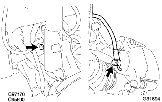
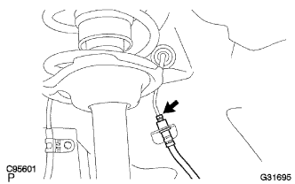

フロント フレキシブル ホース NO.1 取り外し |
| 1. ブレーキ配管作業上の注意事項 |
参照)| 2. フロントタイヤ取りはずし |
| 3. ブレーキフルード抜き取り |
| 4. フロント フレキシブル ホース NO.1取りはずし |
ユニオンボルトおよびガスケットをはずし、フロントブレーキフレキシブルホースNo.1をフロントディスクブレーキシリンダASSY LH から切り離す。
|  |
ボルトをはずし、クランプをフロントショックアブソーバから切り離す。
|  |
ユニオンナットレンチ10を使用して、フロントブレーキチューブをフロントブレーキフレキシブルホースNo.1から切り離す。
クリップをはずし、フロントブレーキフレキシブルホースNo.1を取りはずす。